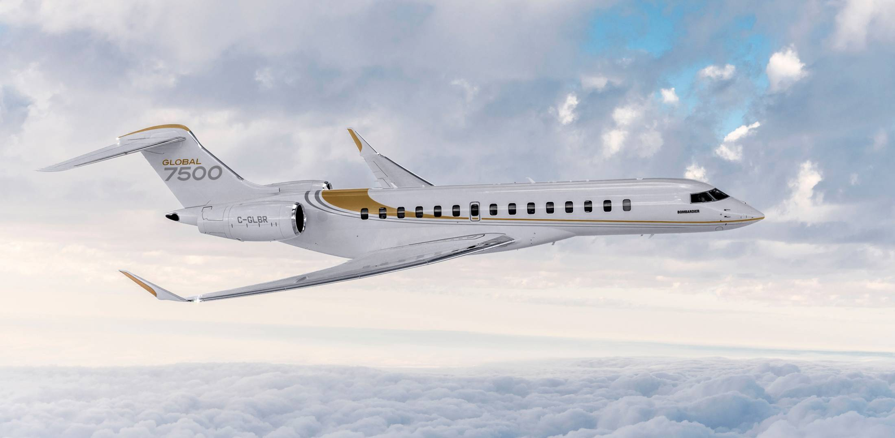

Bombardier Aviation Internship Global 7500 (2019)
Part of Internship at Bombardier Aviation in the Project Engineering team of the Global 7500 business aircraft (see above picture found online). In charge of the daily tasks of aircraft project management, I ensured deliverables were known and shared by the engineering teams concerned, and planning was performed accordingly. In particular, we achieved steep-approach certification of the Global 7500, allowing the aircraft to land and take-off on shorter and more challenging runways. Also achieved Brazilian Foreign Validation, ensuring technical performance compatibility with the Brazilian Civil Aviation Agency’s specific requirements and specifications. This allows the sale and export of Global 7500s to Brazil, a strategic market for Bombardier Aviation business jets.